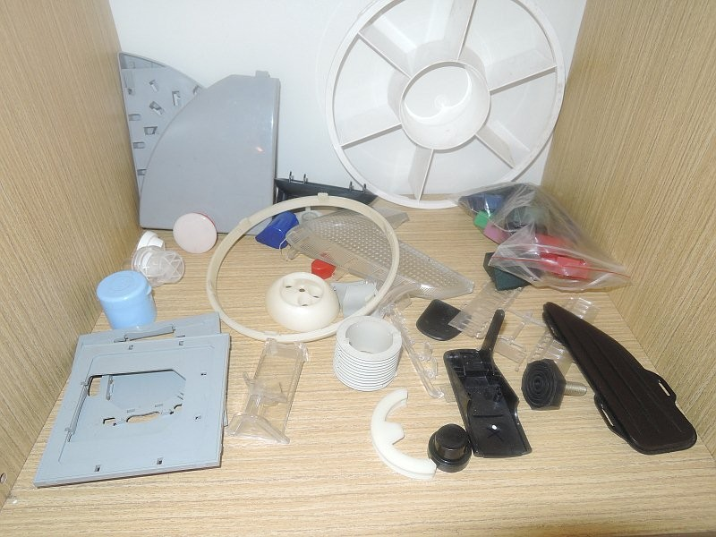

ISO 2768-mK
CNC obrábění
CNC přesné soustružení rotačních dílů
Vysoce přesné CNC soustružení hřídelí, pouzder, přírub a čepů z konstrukčních ocelí, nerezi i neželezných kovů s přesností na setiny milimetru.
Max. točný průměr:
380 mm
Max. točná délka:
750 mm
Opakovatelnost:
±0,005 mm